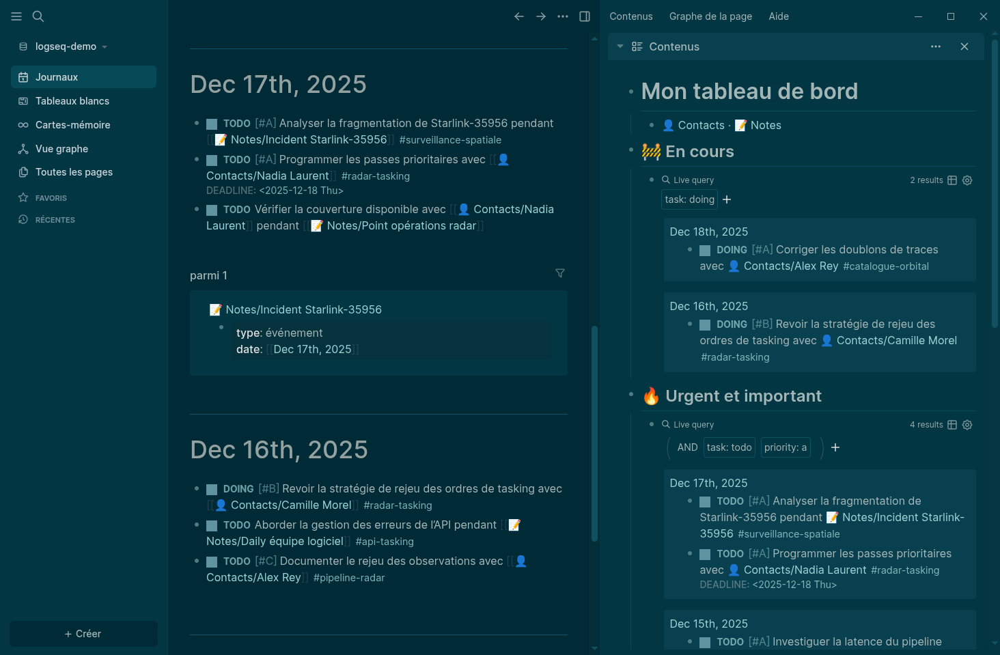
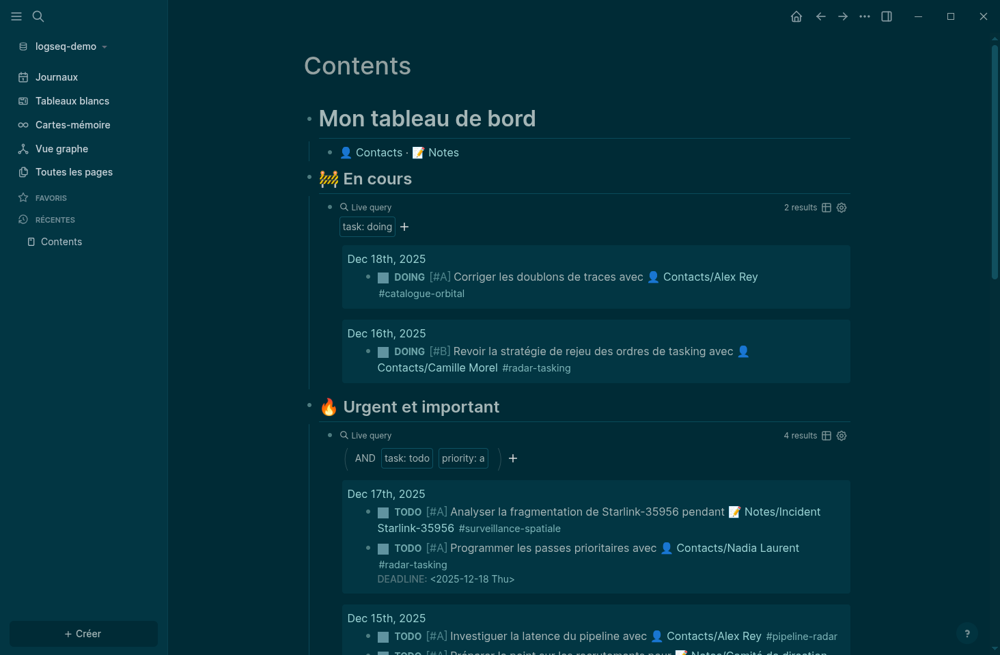
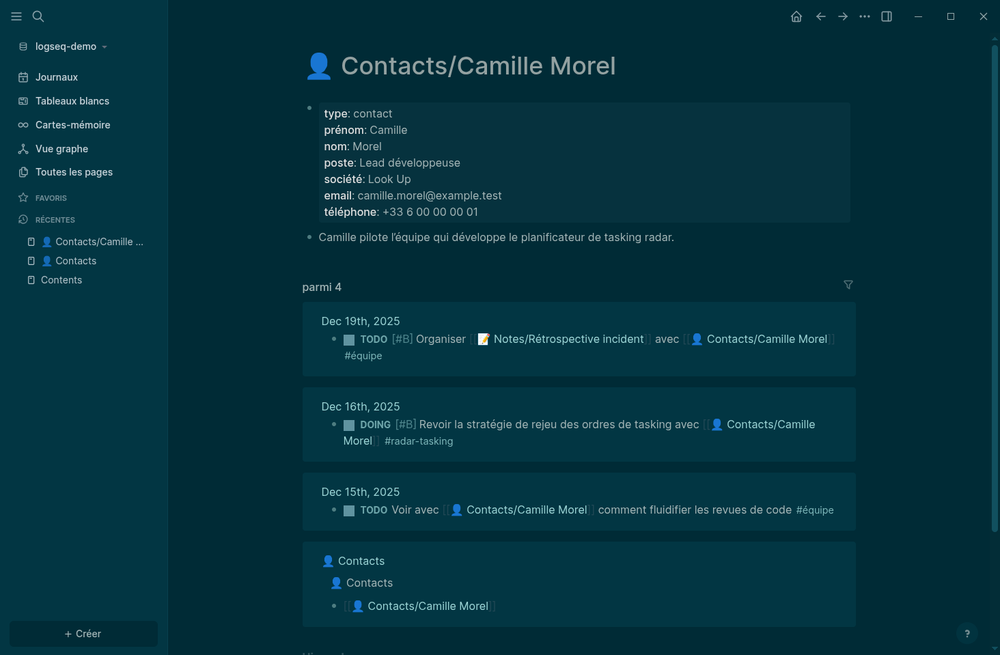
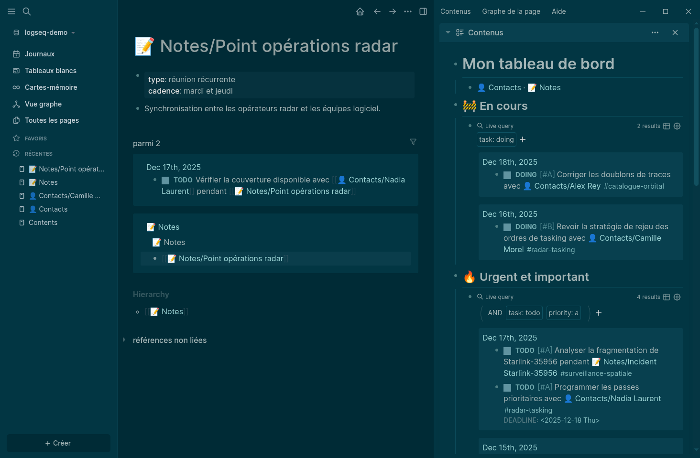

Tout noter. Retrouver l’information au bon moment.
Head of Software chez Look Up
Développeur depuis 25 ans.
Manager depuis 8.
Toujours autant de choses à retenir.
Je capture d’abord. Je traite ensuite.

#radar-tasking, #catalogue-orbital, #dette-technique
[[👤 Contacts/Camille Morel]][[📝 Notes/Point opérations radar]]
Le backlink range la note sans la déplacer.
Contents garde la liste sous mes yeux
Si je reporte une tâche chaque jour, son urgence était probablement imaginaire.
Les références liées forment l’historique.


Après quelques semaines, elle contient aussi la mémoire de la réunion.
DEADLINE sur la tâche, les notes et tout le contexte accumulé.
Un créneau de travail avant l’échéance quand la date compte vraiment.
Contents reste ouvert à droite.Commencez petit. Le système grandira quand un besoin apparaîtra.